7 MUST VISIT PLACES ON PAROS, GREECE
Paros is the Greek island you have never heard of, but should definitely consider on your next Greek excursion! The other more famous islands around the Cyclades (Santorini, Mykonos, Milos etc.) are impressive, but there's a certain charm about Paros that you can't get on any other island. The towns are some of the most picturesque we've seen full of iconic white buildings and bougainvillea flowers. It's also a bit larger of an island which provides even more to explore.
We stayed on the north side of Paros island. Most of our time was spent exploring this northern coast line and some its main towns. We spent about 3 days here but easily could have spent a week. If you do have some extra time, we would recommend looking into Antiparos, a small island just off the southwest coast of Paros. We saw some fun day trips that looked interesting, we just didn't have the time! Regardless of how many days you plan to stay, we put together a quick list of 7 spots you simply must visit on your next trip to Paros!
7 MUST VISIT PLACES ON PAROS GREECE:
- Parikia
- Lefkes
- Noussa
- Church of Saint Anne
- Mikrh Santa Maria Beach
- This Church - Άγιος Ευστράτιος, Πάρος
- Monastery of Saint John's of Deti
Lefkes, Paros
Before we dive into the details, we wanted to share a few quick overview items of the island for planning your stay:
AT A GLANCE
- Currency: EURO, most places take credit card.
- Language: Greek, most people speak some English.
- Typical weather: Mild climate, warm sunny summers and cool rainy winters.
- Nearby Airport: Paros National Airport, (PAS/LGPA).
- Best way to get there: Daily Flights in from Athens or ferry from other Greek island.
GETTING AROUND:
- Car: We decided to rent our own car to have the most freedom to drive around and explore and were happy we did. Especially as the nights can get a little chilly it was nice to not have to ride a scooter back in the dark if we went out for sunset and dinner in another part of the island.
- Scooter: You could probably take a taxi to your accommodation and then rent a scooter to explore the island, but keep in mind that some of the mountain passes are quite steep and not all scooters have the power to make it up the hill
- Bus: Always an option, but we would not recommend this if your time is limited! Buses can also be tricky when going to more remote parts of the island where there aren't direct routes.
WHERE TO STAY
You'll see below there are 3 very picturesque towns you can stay in on Paros (Parikia, Noussa and Lefkes). They all have their charm and would be great for different reasons:
- Parikia: Largest town and closest to the airport. Better for nightlife and amazing sunsets. There are beautiful churches and windmills right in the city itself and it is the cultural center of the island. Though you will likely find the largest crowds here as well because it is also the main port of the island.
- Noussa: A quiet picturesque town on the port. When you picture those narrow little Greek alleyways and white buildings built up by the coast, that is Noussa. There is a great main road down by the water with lots of restaurants to choose from at night and shops filled with airy linen clothes and stylish Mediterranean couture.
- Lefkes: Charming little town up in the mountains with some of the most amazing spots for photos . The streets are filled with pink flowers and traditional white houses. A bit removed from the rest of the island but as result makes it very quiet at night. Has a very traditional feeling, but because it's farther from the main areas, it call feel a little limited with restaurants and shops.
We chose to stay in Parikia and loved our decision. We stayed at this charming little airbnb, called Perivoli Rooms. It was located in the north of the town but really close from the main square.

.JPEG) 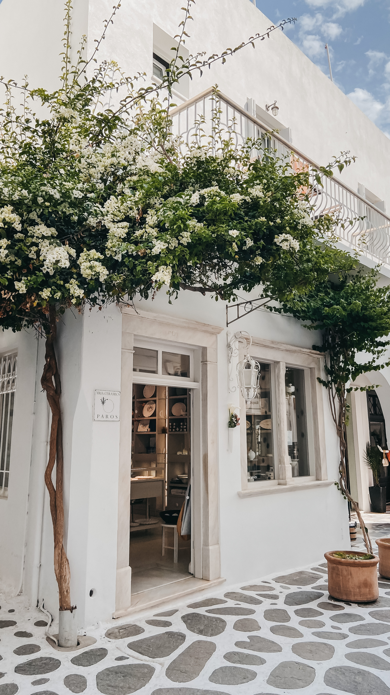
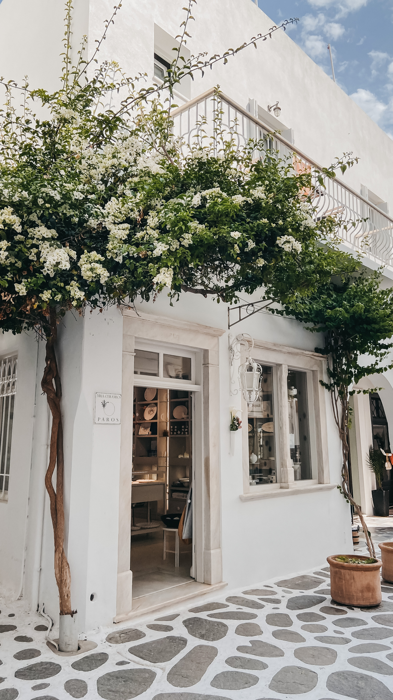
Parikia, Paros
WHERE TO EAT
32 AGOSTO
Delicious popsicle shop with storefronts in Parikia and Naousa. Simply select a flavored popsicle (hazelnut, chocolate, passion fruit, mango, etc), select a dip and select a topping.
ALLAS SOUVLAKI & MORE
Popular spot in Naousa for gyros, souvlaki, tzatsiki and pita. Very affordable.
DISTRATO CAFE
Really cute brunch spot in Parikia that serves smoothies, fresh juices, acai bowls, pancakes, egg dishes and sandwiches.
CUORE ROSSO
Cuore Rosso serves authentic, thin-crust pizza baked in a wood fire oven. Located in Parikia, this place is nothing fancy, but it’s darn delicious and always busy.
NAOUSA WATERFRONT
Barbossa, Sigi Ikthios, Tsachpínēs and Calypso are just a few of the al fresco waterfront dining options on the Naousa harbor. Some are tastier than others, and everything is overpriced. But Naousa’s waterfront dining scene is such a vibe.

 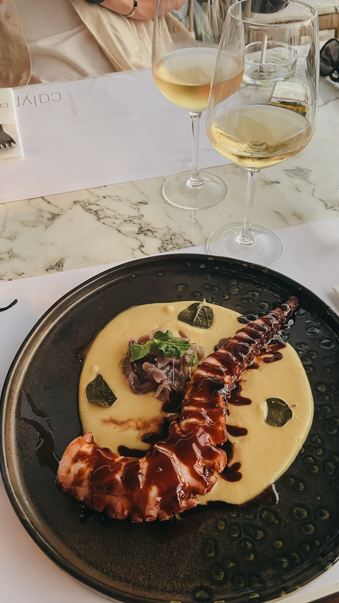
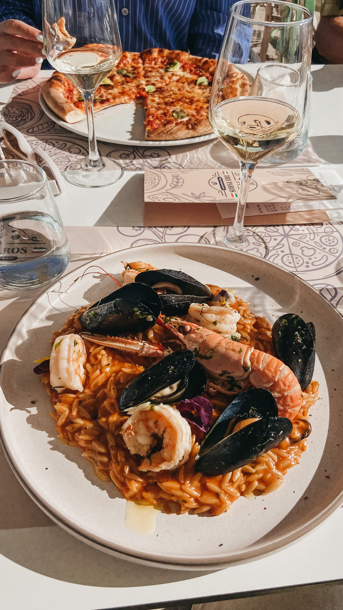
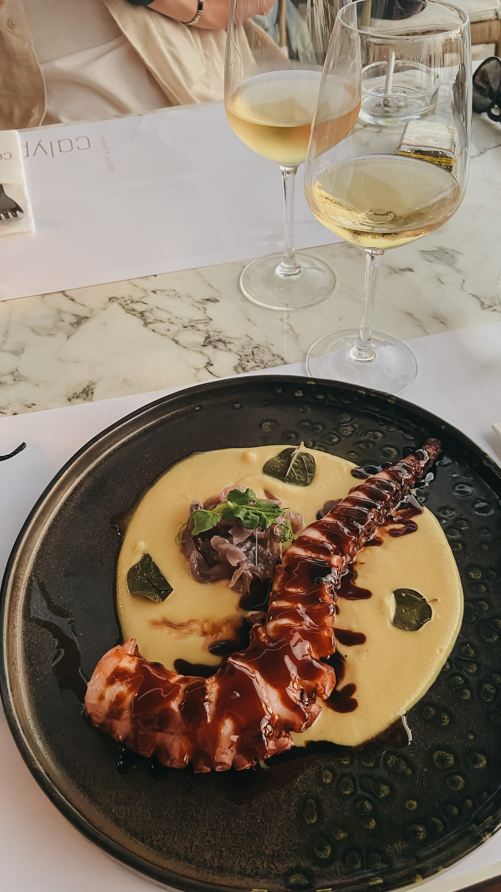
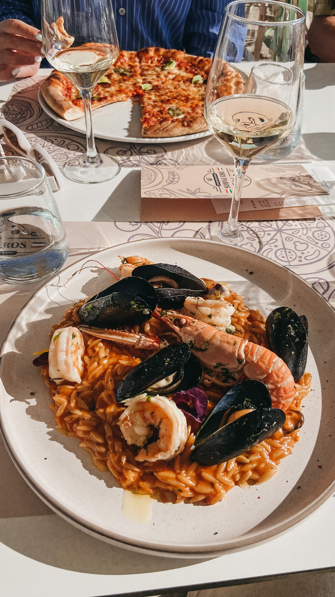
More from Paros ...

 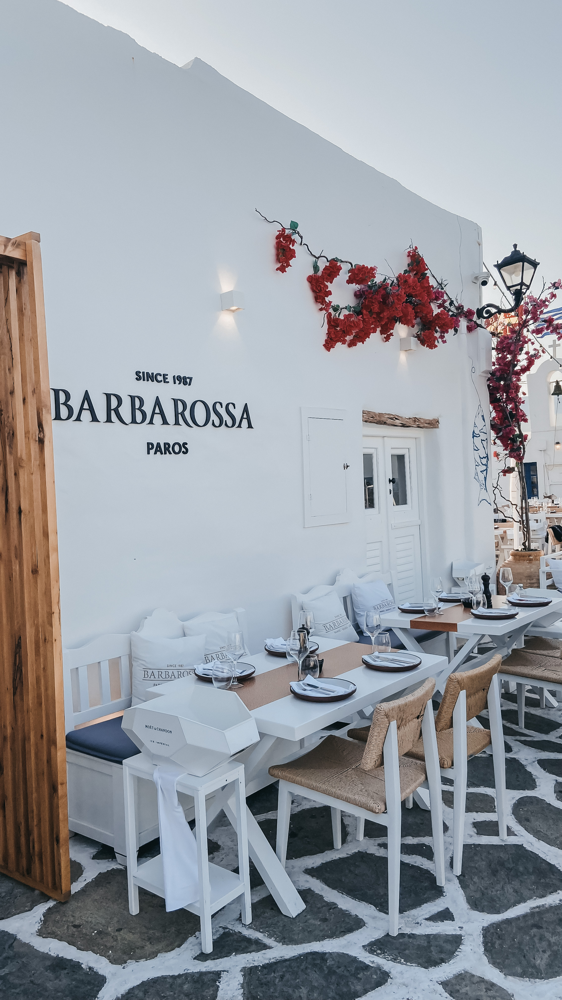
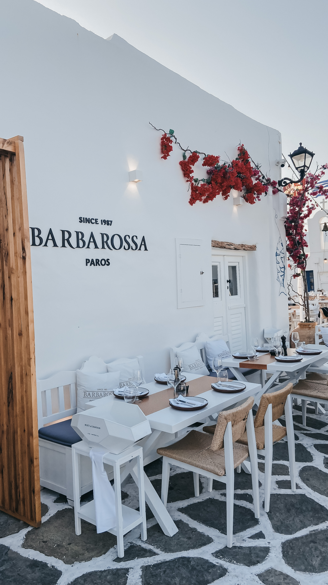


 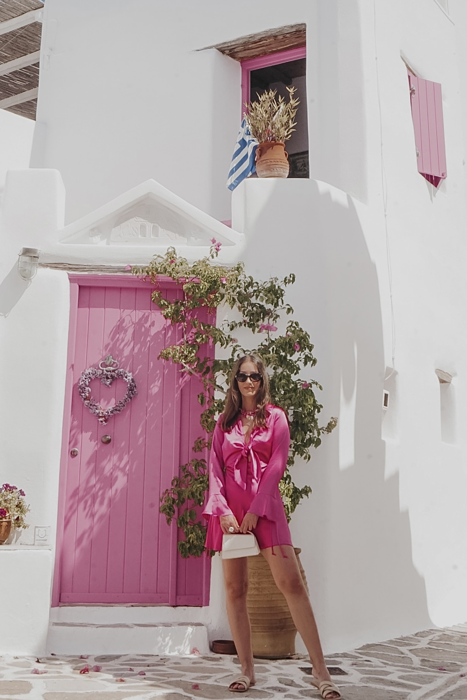
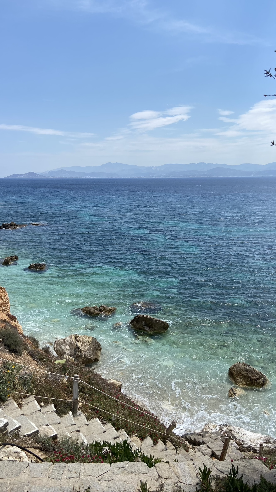
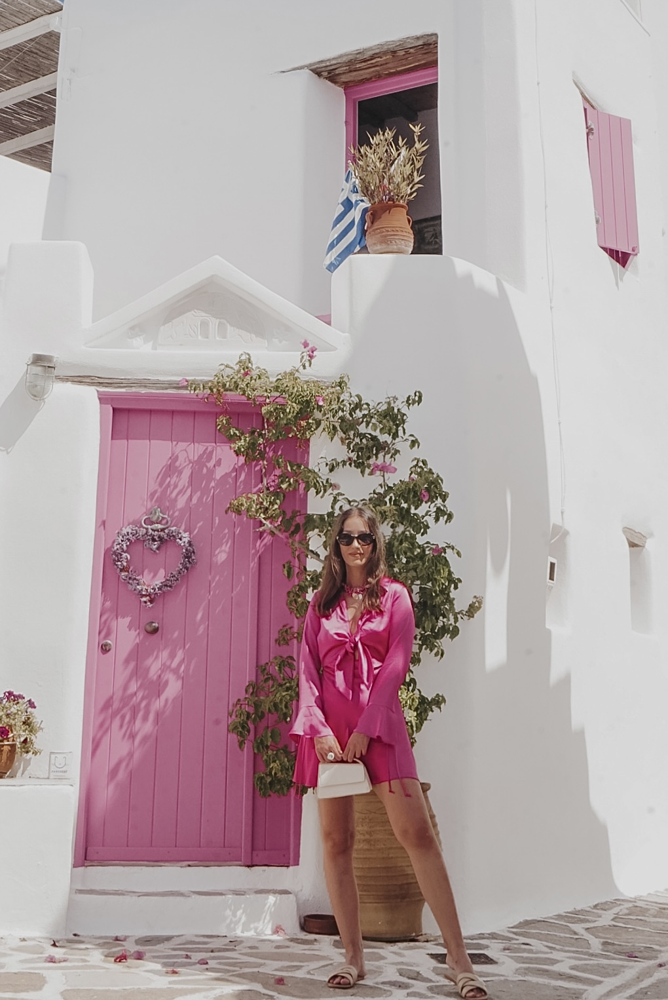
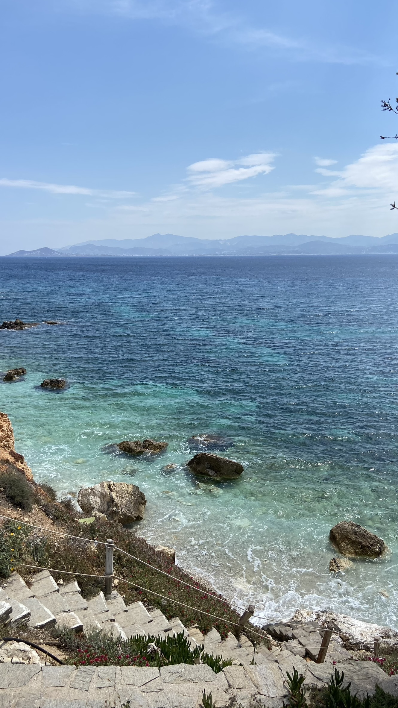